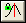

関連する動画はこちら:Selecting Data Range from Fitter
関連する動画はこちら:Selecting Data Range from Fitter
 関連する動画はこちら:Selecting Data Range from Fitter
関連する動画はこちら:Selecting Data Range from Fitter
ピークフィットパラメータダイアログは、ピークアナライザのピークフィットページにあるフィット制御ボタンをクリックして開くことができます。
それには上側パネルと下側パネルの2つのパネルがあります。さらに、中央にはいくつかのボタンをドロップダウンリストがあります。のダイアログでピークフィットを制御したり、モニタリングすることができます。
パラメータタブは、フィッティングを実行するのに選択したすべての関数のすべてのパラメータを一覧表示します。タブ内に表示されている列はカスタマイズすることができます。デフォルトでは、フィット処理中にパラメータ値を可変または固定にするかどうかを制御するチェックボックスがあります。また、このタブを使ってパラメータを共有するかどうかを指定することができます。フィット中に、このタブをアクティブにしておくと、フィット処理をモニタリングすることができます。列タイトルを右クリックして列を追加/削除でき、またコンテキストメニューの列名をチェック/アンチェックすることができます。詳細については以下のトピック、 上側パネル内のタブをカスタマイズをご覧下さい。
| ノート: 一回反復計算を戻してパラメータを確認する場合は、前へボタン |
このタブは、パラメータの上側または下側の境界を設定するのに使用します。各パラメータに対して、上側および下側の境界を定義するため、LB値 および UB値 列に境界値を入力し、 LBおよび UB列から条件を選択します。(条件 "<", "<=", "なし" は、下限または 上限 列をダブルクリックすると、順番に表示されます。)
タブ内に表示される列はカスタマイズできます。列タイトルを右クリックしてコンテキストメニューの列名をチェック/アンチェックすることで列を追加/削除ができます。詳細については以下のトピック、 上側パネル内のタブをカスタマイズをご覧下さい。
| 反復回数の上限 | フィットボタンをクリックしたときに実行する最大の反復数を指定します。 |
|---|---|
| 許容値 | このコンボボックスで許容値を指定します。フィットは、2つの連続した反復計算での既約カイ二乗値が許容値以下であるかどうかを確認します。 |
| 無効な重み付けデータの扱い |
|
| カスタム重み |
カスタム重みの値を設定します。カスタム値で置き換えを選択すると、このオプションを使うことができます。 |
| 制約をかける | ピークフィット中に制約条件を有効にするかどうかを指定します。 この設定と制約（次項を参照してください）は、ユーザがピークアナライザーのテーマ設定ダイアログボックスで線形制約ステータスと制約を有効にしない限り、他のフィットパラメーターと一緒に保存されないことに注意してください（Origin 2021以降、これら2つはデフォルトで有効になっています）。 |
| 制約 | フィットパラメータに対して、線形制約を指定します。制約を指定するシンタックスは、NLFitダイアログでの複製のフィットと同じです。n番目のピークのパラメータを参照するには、「ParaName__n」表記(2つのアンダスコア)が使われます。詳細については、このトピックをご覧下さい。 |
列タイトルを右クリックすると現在のタブに表示されている列や、アイテムのすべてがリストアップされたコンテクストメニューが現れます。その中で列名の前にチェックが付いている列が表示されます。列を追加/削除するには、コンテキストメニューで該当列を選択し、表示ステータスを変更します。タブにすべてのアイテムを表示するには、メニューから全ての列を表示にチェックを入れます。
以下の表は、上側パネルのタブに表示されているすべての列をリストアップしています。
| 列 | 意味 | パラメータタブにデフォルトで表示しますか? | 境界タブにデフォルトで表示しますか? |
|---|---|---|---|
| いいえ | ピークのインデックス番号 | はい | はい |
| ピークタイプ | そのピークに対して選択している関数この列をクリックすると、ドロップダウンリストが現れ、関数を変更することができます。 | はい | はい |
| パラメータ | パラメータの名前 | はい | はい |
| 意味 | パラメータの意味 | はい | はい |
| 共有 | パラメータを共有するかどうかを指定します。パラメータを共有しない場合、この列に0を入力します。パラメータを共有する場合、0以外の数字をグループ番号として割り当てます。同じグループのすべてのパラメータが共有され、フィット処理中に同じ値が使われます。 | はい | いいえ |
| 固定 | パラメータを固定するかどうかを指定します。パラメータが固定の場合、その値はフィット処理中に変更されません。 | はい | いいえ |
| 値 | パラメータの値この列をダブルクリックして、パラメータ値を編集することができます。 | はい | はい |
| 誤差 | パラメータの誤差 | はい | いいえ |
| 依存度 | 依存度の値 | はい | いいえ |
| 下側信頼水準 | 下側信頼水準 | はい | いいえ |
| 上側信頼水準 | 上側信頼水準 | はい | いいえ |
| 有効桁数 | 値列の数字の有効桁数を指定します。デフォルトオプションはシステムで、これは有効桁数に制限がないことを意味しています。有効桁数はドロップダウンリストから選ぶことができます。1から15までの範囲が有効です。 | はい | いいえ |
| 下側境界 | 下側境界の値 | いいえ | はい |
| < または <= | 下側/上側境界制御 | いいえ | はい |
| 上側境界 | 上側境界の値 | いいえ | はい |
| データ範囲 | フィットするデータ範囲 | いいえ | いいえ |
| 全ての列を表示 | 全ての列を表示するかどうかを指定します。 |
タブタイトルを右クリックすると以下の図のようなコンテクストメニューがありますメニューでは、現在のタブを残したり新しいタブを追加するなど、タブのカスタマイズをすることができます。

以下はメニューコマンドの意味です。
| 組み込み設定値のロード | 組み込み設定値をパラメータタブと境界タブにロードします。2つのサブメニューが含まれます。:
|
|---|---|
| 設定のロード | このメニューコマンドは現在のタブに保存した設定をロードします。 |
| 設定の保存 | 現在の設定を保存します。 |
| 設定に名前を付けて保存 | 別の設定として現在の設定を保存します。 |
| 新しいタブ | 新しいタブを作成します。 |
| 削除タブ | 現在のタブを削除します。 |
| タブの名前変更 | 現在のタブの名前を変更します。 |
共有列の行を右クリックすると以下の図のようなコンテクストメニューが現れます。
以下はメニューコマンドの意味です。
| "共有"をすべてに同じく適用 ... | 同じプレフィックス名(例, "xc_1" と "xc_2" は同じプレフィックス"xc"があります)を持つパラメータに同じ共有状態と指定します。 |
|---|---|
| "共有"をクリア | 全パラメータの共有状態をクリアにします。 |
固定列の行を右クリックすると下図のようなコンテキストメニューが現れます。
以下はメニューコマンドの意味です。
| "固定"をすべてに同じく適用 ... | 同じプレフィックス名(例, "xc_1" と "xc_2" は同じプレフィックス"xc"があります)を持つパラメータに同じ固定状態と指定します。 |
|---|---|
| "固定"をクリア | 全パラメータの固定状態をクリアにします。 |
値列の行を右クリックすると下図のようなコンテキストメニューが現れます。
以下はメニューコマンドの意味です。
| 同じ”値”を全ての...に適用する | 同じプレフィックス名(例, "xc_1" と "xc_2" は同じプレフィックス"xc"があります)を持つパラメータに同じ値状態と指定します。 |
|---|---|
| "値"のコピー(全…中) | 同じプレフィックス名を持つすべてのパラメータの値をコピーします。 |
| "値"の全…へ貼り付け | 同じプレフィックス名を持つすべてのパラメータの値にデータセットを貼り付けます。 |
| 列全体のコピー | 値列全体をコピーします。 |
| 列全体に貼り付け | 値列にデータセットを貼り付けます。 |
< または <=列を右クリックすると、 "境界状態"を共有するためのコンテキストメニューが現れます
パラメータに 境界 を設定した場合、下限列、上限列を右クリックしても、下図のようなコンテキストメニューが現れます。
以下はメニューコマンドの意味です。
| セルのフォーマット... | 選択したセルのフォーマットを指定します。現在、3つの形式(数値、日付、時間)のみ利用可能です。 |
|---|---|
| 同じ"境界"を全ての…に適用 | 同じプレフィックス名(例, "xc_1" と "xc_2" は同じプレフィックス"xc"があります)を持つパラメータに同じ境界状態と指定します。 |
| フォーマットを全ての…に適用 | 現在のセルのフォーマットを同じプレフィックスを持つパラメータ(例, "xc_1" と "xc_2" は同じプレフィックス"xc"があります)に適用します。 |
| 全ての...の "境界" をクリア | 同じプレフィックス名を持つパラメータの境界状態をクリアにします。 |
| "境界"をデフォルトにリセット | 境界状態をデフォルトに戻します。 |
| "下限"のコピー(全…中） | このメニューアイテムは下限/上限列を右クリックしたときのみアクセスが可能です。同じプレフィックス名を持つ全てのパラメータの"下限/上限 値"をコピーします。 |
| "下限"の全…への貼り付け | このメニューアイテムは下限/上限列を右クリックしたときのみアクセスが可能です。同じプレフィックス名を持つすべてのパラメータの "下限/上限値" にデータセットを貼り付けます。 |
| 列全体のコピー | 下限/上限列の値をすべてコピーします。 |
| 列全体に貼り付け | 下限/上限列にデータセットを貼り付けます。 |
| 自動パラメータ初期化 | 自動パラメータの初期化を有効にするかどうかを指定します。パラメータ値をテーマとして保存したい場合には、このチェックボックスのチェックは外して下さい。 |
|---|---|
| 隠す | このボタンをクリックして、パラメータを隠すダイアログを開きます。このダイアログは、いくつかのパラメータを選択して、ピークフィットパラメータダイアログから非表示にするのに使用します。パラメータを隠すには次のプレフィックスを持つパラメータを隠す と 共共有以外のパラメータを隠すの2つの手法があります。両方の手法が選択されると、先の手法が後の手法より優先されます。
|
このパネルは、フィット処理と結果をモニタリングするのに使用されます。 例えば、フィットが収束したか、実行した反復数、現在のカイ二乗値を見ることができます。
| 「関数」ドロップダウンリスト | リストから関数を選択します。すべてのピークに対するピークタイプをこの関数にセットします。各関数の詳細は、ピークアナライザの関数のリファレンス を確認してください。 |
|---|---|
| ピークラベルの切り替え | ピークラベルタイプを指定しますx 値、y 値またはx 値と y 値一緒にピークのラベルとしてピークのインデックスを使用します。 |
| ピークの並び替え
|
このボタンはピークのソート ボタンが使用されているときのみ有効です。ピークのデフォルト順番を置換えます。 |
| ピークのソート
|
ピークのソートダイアログを開いて、ピークをソートします。ピークは、中心、幅、振幅で、昇順または降順でソートすることができます。 |
| 基線パラメータを固定／解除
|
基線パラメータを固定するかどうかを指定します。基線のパラメータが固定されると、錠前のアイコンがこのボタンに現れます。 |
| ピーク中心の固定／解除
/ |
ピークの中心を表すパラメータを固定にするかどうかを指定します。ピークの中心が固定されると、錠前のアイコンがこのボタンに現れます。 |
| ピーク幅の固定／解除 | ピークの幅を表すパラメータを固定にするかどうかを指定します。ピークの幅が固定されると、錠前のアイコンがこのボタンに現れます。 |
| パラメータの初期化
|
パラメータ初期化コード(初期値)を使ってパラメータを初期化します。 |
| カイ二乗の計算 | 現在の自由度あたりのカイ二乗を計算し、下側パネルに出力します。 |
| 1回反復 | このボタンをクリックすると、反復計算を1回実行します。ピーク中央が変化します。 (これは以下に示す、最初に数回の反復する収束までフィットとは異なります。）結果は下側パネルに表示されます。 |
| 収束までフィット
|
このボタンをクリックしてフィットが収束されるまで反復を実行します。結果は下側パネルに表示されます。 1回反復とは対照的に、収束までフィットボタンをクリックすると、Origin はピークセンタｰをはじめに20回反復してから解放します。反復回数を増減するには、システム変数@FCIの値を変更します。 また、このFAQを参照してください。 |
| 詳細を表示 |
下側パネルの表示をオン/オフします。 |